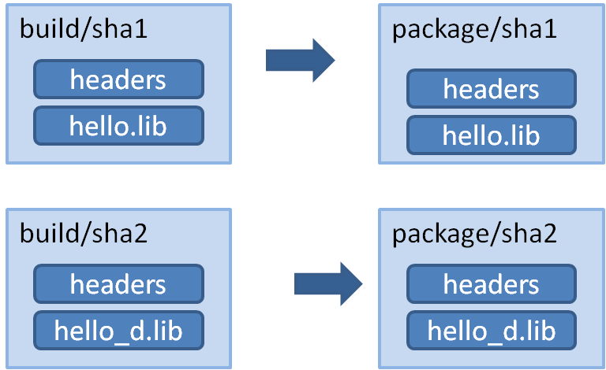
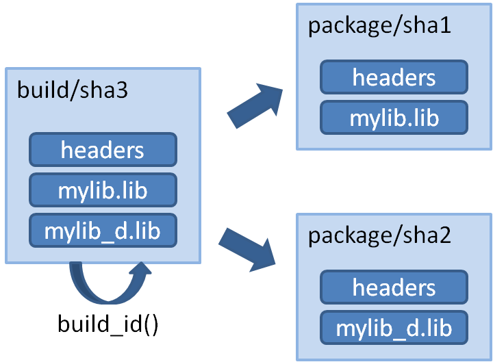

创建包
本章主要关于如何创建、构建以及测试你的包。
起步
我们从一个已经存在的代码库https://github.com/conan-io/hello开始学习怎么创建conan包。可以看到这是一个很简单的“hello world” C++库，它使用CMake构建出来一个库可执行程序。当前它和Conan没有任何关系。
虽然当前示例使用github作为包的源码仓，但是Conan也支持选择其它代码源，例如从网络上下载压缩包（*.zip或者tar包）。
创建包配置
首先，我们为包的配置创建一个目录，然后使用conan new命令，帮我们生成初始的配置文件：
$ mkdir mypkg && cd mypkg
$ conan new Hello/0.1 -t
现在我们的目录下有这些文件：
conanfile.py
test_package
CMakeLists.txt
conanfile.py
example.cpp
顶级目录下的conanfile.py文件是主要的包配置文件，用于定义一个包。下面的test_package目录，站在消费者的角度去链接我们将要创建的包，用于测试我们的包是否创建OK。
顶层的conanfile.py文件内容如下：
from conans import ConanFile, CMake, tools
class HelloConan(ConanFile):
name = "Hello"
version = "0.1"
license = "<Put the package license here>"
url = "<Package recipe repository url here, for issues about the package>"
description = "<Description of Hello here>"
settings = "os", "compiler", "build_type", "arch"
options = {"shared": [True, False]}
default_options = {"shared": False}
generators = "cmake"
def source(self):
self.run("git clone https://github.com/conan-io/hello.git")
# This small hack might be useful to guarantee proper /MT /MD linkage
# in MSVC if the packaged project doesn't have variables to set it
# properly
tools.replace_in_file("hello/CMakeLists.txt", "PROJECT(MyHello)",
'''PROJECT(MyHello)
include(${CMAKE_BINARY_DIR}/conanbuildinfo.cmake)
conan_basic_setup()''')
def build(self):
cmake = CMake(self)
cmake.configure(source_folder="hello")
cmake.build()
# Explicit way:
# self.run('cmake %s/hello %s'
# % (self.source_folder, cmake.command_line))
# self.run("cmake --build . %s" % cmake.build_config)
def package(self):
self.copy("*.h", dst="include", src="hello")
self.copy("*hello.lib", dst="lib", keep_path=False)
self.copy("*.dll", dst="bin", keep_path=False)
self.copy("*.so", dst="lib", keep_path=False)
self.copy("*.dylib", dst="lib", keep_path=False)
self.copy("*.a", dst="lib", keep_path=False)
def package_info(self):
self.cpp_info.libs = ["hello"]
这是一个完整的包配置文件。在进入细节前，我们看看基本的内容：
settings字段定义了能产生包的不同二进制的配置有哪些。本例中，任何对"os", "compiler", "build_type", "arch"的改变都会产生一个不同的二进制包。Conan利用一个配置文件加上具体不同的配置值产生不同的二进制包。
注意，在交叉编译情况下，依据包的配置文件构建包的平台和最终代码运行的平台是不同的（self.settings.os和self.settings.arch）。因此如果你要根据构建机器选择不同的构建方式，你需要类似如下：
def build(self):
if platform.system() == "Windows":
cmake = CMake(self)
cmake.configure(source_folder="hello")
cmake.build()
else:
env_build = AutoToolsBuildEnvironment(self)
env_build.configure()
env_build.make()
包的配置文件可以定义包最终要生成静态还是动态库的选项，具体使用
shared，它默认被设成了False；source()方法用来执行git clone，从Github上获取代码。其它的代码源，例如下载源码的zip文件也是支持的。事实上通过python代码，对源码的任何处理都是可以的，例如从某一个branch或者tag下载代码，或者对源码应用patch。本例中，我们为已经代码中已经存在的CMake文件增加了两行代码，用于保证二进制兼容性。关于这点更详细的内容随后会再进一步解释。build()方法用于配置项目的构建过程。本例演示了通过CMake命令构建源码的过程。这里你也可以使用其它构建工具，如make、MSBuild、SCons或者其它构建工具，具体可以查看这里；package()方法将所有的发布物（头文件和libs）从build目录下拷贝到最后的包目录下；最后
package_info()函数定了用户使用这个包的时候需要链接名为hello的库文件。其它的信息如include或者lib文件路径等都可以定义在这里。这些信息将会被Conan的generator使用并写入生成的文件中(conanbuildinfo.cmake)，供最终用户使用。
更多关于conanfile.py文件的细节建议查看该文件的说明手册https://docs.conan.io/en/latest/reference/conanfile.html#conanfile-reference。
test_package目录
test_folder目录不是用来做单元测试或者集成测试的，它是用来测试我们要生成的包是否能够正常被使用。
test_folder目录下的example.cpp和CMakeLists.txt文件并没有什么特别的，但同时也存在一个包配置文件：test_package/conanfile.py。这个包配置文件类似于我们前面的conanfile.txt，用于扮演一个包的消费者。
from conans import ConanFile, CMake
import os
class HelloTestConan(ConanFile):
settings = "os", "compiler", "build_type", "arch"
generators = "cmake"
def build(self):
cmake = CMake(self)
cmake.configure()
cmake.build()
def imports(self):
self.copy("*.dll", dst="bin", src="bin")
self.copy("*.dylib*", dst="bin", src="lib")
def test(self):
os.chdir("bin")
self.run(".%sexample" % os.sep)
这个conanfile.py文件具有以下特点：
- 不包含name和version字段，因为它只是用来测试，不发布包；
- 同样也不需要
package()和package_info()函数； test()函数指明了我们需要跑的二进制程序；import()函数将所有共享库拷贝进当前的bin目录下。这样当test()调动example可执行程序的时候，它将能够执行动态链接并执行；
注意：在test_package目录下的conanfile.py中并不需要显示的在
requires表达需要依赖被测试的`Hello/0.1@demo/testing'包，因此这个依赖Conan会在执行的时候自动加上。如果你选择显示声明这个依赖，也会正常执行，不过你需要记住一旦你修改了发布包的版本或者user和channel，你得记着在test_package下修改依赖描述。
创建和测试包
现在，你可以使用当前的配置创建和测试包了：
$ conan create . demo/testing
...
Hello world!
如上，输出“Hello world！”则说明运行正常。
在上面的conan create命令做了如下事宜：
- 从用户的目录(mypkg)导出
conanfile.py到本地缓存； - 安装包，从源码构建；
- 在test_package目录下创建一个临时的build目录；
- 执行'conan install ..'命令，安装test_package/conanfile.py中描述的依赖；（注意，对hello包的依赖时conan自动为test_package加入的）；
- 通过调用test_package/conanfile.py中的
build()和test()函数，执行example的构建和运行。
对于conan create命令，它和运行下面一些列命令式等价的：
$ conan export . demo/testing
$ conan install Hello/0.1@demo/testing --build=Hello
# package is created now, use test to test it
$ conan test test_package Hello/0.1@demo/testing
你可以为conan create传入不同的参数来执行不同的构建：
$ conan create . demo/testing -s build_type=Debug
$ conan create . demo/testing -o Hello:shared=True -s arch=x86
$ conan create . demo/testing -pr my_gcc49_debug_profile
...
$ conan create ...
创建包的时候也可以忽略user/channel字段，直接conan create .。
包配置文件中的 settings 和 Options 的区别
我们在包配置中的setting中指定了os,arch以及compiler。注意到上面的示例中包配置文件汇总还有一个shared的option（options = {"shared" : [True, False]}）。那么settings和options之间的区别是什么呢？
Settings是全工程级别的配置，它会应用到所有构建的工程。例如操作系统和体系架构一般对于一个工程所有依赖的包的构建来说都是相同的。为Windows程序链接一个linux的库这种交叉的情况是没有的。
另外setting没有包级别的默认值。一个包不可能配置os的默认值为Windows，os参数是包构建的时候根据实际环境传入的。
使用包的工程可以配置settings，你可以在~/.conan/settings.yml文件中查看当前支持的所有settings的种类以及值。当然你也可以修改这个文件，增加新的settings分类和允许的值。具体参考https://docs.conan.io/en/latest/extending/custom_settings.html#custom-settings。
Options用来描述包级别的配置。包是静态还是动态链接（Static和Shared）不应该是一个针对所有包的setting配置，所以需要是options。一些包可能是纯头文件的包，还有一些可能仅仅是数据、或者可执行程序，因此包可以定义任意它们需要的options。
根据需要在包的配置文件中定义所有包支持的options，包含它们的名字和可选的值，以及默认值。
注意上述情况有些例外，比如可以通过命令行为某一个包指定特殊的settings配置：conan install . -s MyPkg:compiler=gcc -s compiler=clang ..。这将会导致使用gcc构建MyPkg并用clang构建其余所有依赖的包；
也可以通过命令行参数修改所有包的option，例如conan install . -o *:shared=True，将所有包的shared改为True。
包配置文件和源码在不同的代码仓
前面的例子中，我们从一个外部代码仓获取包的源码，这种情况一般用于对第三方代码库制作包。
有两种不同的从外部代码仓获取源码的方式：
- 使用
source()函数：
from conans import ConanFile, CMake, tools
class HelloConan(ConanFile):
...
def source(self):
self.run("git clone https://github.com/conan-io/hello.git")
...
你也可以使用tools.Git类：
from conans import ConanFile, CMake, tools
class HelloConan(ConanFile):
...
def source(self):
git = tools.Git(folder="hello")
git.clone("https://github.com/conan-io/hello.git", "master")
...
- 使用conanfile的scm属性（注意：这是个实验特性）；
from conans import ConanFile, CMake, tools
class HelloConan(ConanFile):
scm = {
"type": "git",
"subfolder": "hello",
"url": "https://github.com/conan-io/hello.git",
"revision": "master"
}
...
Conan将会从scm url检出scm version对应的代码。source()方法在代码检出后仍然会被调用，因此你仍然可以在里面做一下源码检出后的patch活动。
包配置文件和源码在同一个代码仓
如果我们是在给自己开发的代码写包配置文件，那么配置文件和源码在一起就会比较方便。具体有两种方式来做：
- 使用
exports_sources属性，将包的配置文件和源码快照一起导出； - 使用
scm属性从对应的远端代码仓自动获取包源码的指定commit版本；
使用exports_sources导出包配置和源码
如果我们希望包配置和源码在一个代码仓并将源代码也打包发布，这将是一个很方便的做法。
首先，我们在当前目录下使用命令conan new Hello/0.1 -t -s自动创建初始的代码和包配置文件。
可见自动创建了src目录，并在下面初始化了hello的源码。而启动创建的conanfile.py如下：
from conans import ConanFile, CMake
class HelloConan(ConanFile):
name = "Hello"
version = "0.1"
license = "<Put the package license here>"
url = "<Package recipe repository url here, for issues about the package>"
description = "<Description of Hello here>"
settings = "os", "compiler", "build_type", "arch"
options = {"shared": [True, False]}
default_options = {"shared": False}
generators = "cmake"
exports_sources = "src/*"
def build(self):
cmake = CMake(self)
cmake.configure(source_folder="src")
cmake.build()
# Explicit way:
# self.run('cmake "%s/src" %s' % (self.source_folder, cmake.command_line))
# self.run("cmake --build . %s" % cmake.build_config)
def package(self):
self.copy("*.h", dst="include", src="src")
self.copy("*.lib", dst="lib", keep_path=False)
self.copy("*.dll", dst="bin", keep_path=False)
self.copy("*.dylib*", dst="lib", keep_path=False)
self.copy("*.so", dst="lib", keep_path=False)
self.copy("*.a", dst="lib", keep_path=False)
def package_info(self):
self.cpp_info.libs = ["hello"]
这个和我们前面的例子的文件有两个重要的不同：
- 增加了
exports_sources字段，指示Conan将本地src目录下所有文件导出到包里； - 去除了
source()方法，因为不需要从外部下载代码或者对代码做额外的特殊处理；
因为如下两行代码已经被加到了源码的CMake文件中了，所以包的conanfile.py中也不必再去修改源码的CMake文件了。
include(${CMAKE_BINARY_DIR}/conanbuildinfo.cmake)
conan_basic_setup()
如下，可以创建一个包，并在版本后加上user/channel属性为 “demo/testing”:
$ conan create . demo/testing
...
Hello/0.1@demo/testing test package: Running test()
Hello world!
使用scm属性从远端仓库中下载对应commit的代码（注意，这是个实验特性）
可以在使用scm属性的时候将url和revision字段设置为auto，这样当导出包配置文件的时候（调用conan create时），Conan将会自动捕获当前代码对应的远端仓库以及提交commit：
import os
from conans import ConanFile, CMake, tools
class HelloConan(ConanFile):
scm = {
"type": "git", # Use "type": "svn", if local repo is managed using SVN
"subfolder": "hello",
"url": "auto",
"revision": "auto",
"password": os.environ.get("SECRET", None)
}
...
当你将conanfile.py提交到代码仓的时候，文件中的auto会被保留。但是当你将代码导出到Conan的本地缓存的时候，conanfile.py中的auto值将会被conan捕获并存在一个conandata.yml文件中（具体依赖“~/.conan/conan.conf”中的“scm_to_conandata”配置）。
- 如果“scm_to_conandata”配置为不使能（Conan v1.x默认为不使能），Conan将会直接修改connanfile.py，并将其对应属性的值存在一个纯文本文件中；当向conan远程库上传包配置的时候，conan将会将包配置文件中的值进行替换并提交；
import os
from conans import ConanFile, CMake, tools
class HelloConan(ConanFile):
scm = {
"type": "git",
"subfolder": "hello",
"url": "https://github.com/conan-io/hello.git",
"revision": "437676e15da7090a1368255097f51b1a470905a0",
"password": "MY_SECRET"
}
...
- 如果“scm_to_conandata”使能，这些
auto的值将会被存在conandata.yml文件中，并在导出包配置的时候自动更新；
如果从源码构建包，Conan需要在运行source()方法（如果定义了的话）前，获取url/commit对应的代码。
由于scm属性是有代码运算的，因此你也可以写复杂的计算逻辑，为其计算合理的值。
import os
from conans import ConanFile, CMake, tools
def get_remote_url():
""" Get remote url regardless of the cloned directory """
here = os.path.dirname(__file__)
svn = tools.SVN(here)
return svn.get_remote_url()
class HelloConan(ConanFile):
scm = {
"type": "svn",
"subfolder": "hello",
"url": get_remote_url(),
"revision": "auto"
}
...
提醒：
conan create或者conan export命令执行时，Conan将会把当前工程的源码导出到本地缓存，但是这时你可能还没有commit代码以及将其push到远端代码仓中。这个特性相比每次从代码仓中克隆代码要快，但是当你的scm特性中有auto字段且你存在没有commit的代码变动时，Conan还是会给一个告警信息。你可以使用--ignore-dirty配置忽略告警，但是当你执行conan upload命令的时候仍不能上传包，除非你强制使用conan upload --force上传auto字段没有被正确替换的包。
打包已存在的二进制
在有些特定的场景下，需要使用已经存在二进制来构建conan包。
- 当你不能从源码构建包，比如你只有别人构建好的二进制；
- 当你在开发包的过程中，只想将二进制导入到本地缓存，以避免调用
conan create引起的重新构建。这个方法让你使用IDE或者运行conan build命令过程中保留你的构建缓存。
打包预编译的二进制
打包预编译的二进制文件的话，包配置文件的build()方法，不能够写代码从用户目录拷贝文件，因为发包后无法可复现的从用户目录再次拷贝二进制文件。这里，Conan提供了conan export pkg命令。
打包二进制，仍然是需要包配置文件的，但是文件很简单，只用包含基本的包的元信息即可。
$ conan new Hello/0.1 --bare
于是，会在本地缓存创建如下的包配置文件：
class HelloConan(ConanFile):
name = "Hello"
version = "0.1"
settings = "os", "compiler", "build_type", "arch"
def package(self):
self.copy("*")
def package_info(self):
self.cpp_info.libs = self.collect_libs()
这个配置文件中的package_info()函数将会从包中扫描所有的文件，为最终用户提供可以链接的库名。默认的package_info()会按照如下规则配置包：头文件在“include”目录下，库文件在“lib”目录下，而其它二进制文件在“bin”目录下。可以自定义package_info()函数实现其它包结构。
包的配置文件依然可以提供options，增加依赖requires，以及做其它配置定制。
基于之前的例子，我们假定当前目录中的lib目录下有构建好的hello的库文件libhello.a，并且与windows MinGW4.9兼容，这时我们可以直接产生一个二进制包：
$ conan export-pkg . Hello/0.1@myuser/testing -s os=Windows -s compiler=gcc -s compiler.version=4.9 ...
强烈推荐使用test_package目录对包进行本地测试，如果我们不想从源码构建包，我们需要如下操作：
$ conan new Hello/0.1 --bare --test
# customize test_package project
# customize package recipe if necessary
$ cd my/path/to/binaries
$ conan export-pkg PATH/TO/conanfile.py Hello/0.1@myuser/testing -s os=Windows -s compiler=gcc -s compiler.version=4.9 ...
$ conan test PATH/TO/test_package/conanfile.py Hello/0.1@myuser/testing -s os=Windows -s compiler=gcc -s ...
上述最后两条命令可以针对不同的配置（继续创建其它的二进制包）重复执行。
下载以及打包预编译好的二进制
在需要下载二进制的场景下，需要创建包配置文件，并描述二进制获取的方式（因为这个过程是可重复的）。如下：
class HelloConan(ConanFile):
name = "Hello"
version = "0.1"
settings = "os", "compiler", "build_type", "arch"
def build(self):
if self.settings.os == "Windows" and self.settings.compiler == "Visual Studio":
url = ("https://<someurl>/downloads/hello_binary%s_%s.zip"
% (str(self.settings.compiler.version), str(self.settings.build_type)))
elif ...:
url = ...
else:
raise Exception("Binary does not exist for these settings")
tools.get(url)
def package(self):
self.copy("*") # assume package as-is, but you can also copy specific files or rearrange
def package_info(self): # still very useful for package consumers
self.cpp_info.libs = ["hello"]
一般情况下，针对不同配置构建出来的二进制是不同的，所以build()函数中需要根据不同的settings从不同的URL上下载。
了解打包过程
手动创建和测试包
我们强烈推荐如前面例子所示，在包下创建test_package目录来测试包，但是这种方式不是强制的。你可以使用conan new命令的时候不带-t参数：
$ mkdir mypkg && cd mypkg
$ conan new Hello/0.1
这时只会创建一个conanfile.py文件，现在我们可以创建我们的包：
$ conan create . demo/testing
这等价于：
$ conan export . demo/testing
$ conan install Hello/0.1@demo/testing --build=Hello
conan install的参数--build可以简写为-b，指定要从源码构建包，参数是包名。其它可选的参数分别有never、missing、cascade以及outdated，具体查看conan install --help。
一旦包被创建，它就可以被消费了。
包的创建过程
理解包在本地缓存中的目录布局以及创建流程对于用好conan是重要的。
每个包在本地缓存中有如下重要的目录：
- export: 包的配置文件存在这个目录下；
- export_source: 包配置中
exports_sources属性指明的代码将会被拷贝到这里； - source: 构建所需要的源码存在这里；
- build: 从源码执行构建的产物放在这里，如果有多个二进制配置的话，这个目录将会在各自的二进制的子目录下都有；
- package: 这个目录是最终的包目录。每个二进制配置下都将会有一个。
source和build目录，仅当包是从源码构建出来的才会存在。

打包的过程起始于通过conan export或者conan create将包导出。conanfile.py以及通过export_sources字段指定的文件都将被拷贝到用户的临时缓存中。
接下来，export以及export_source下的文件被拷贝到source目录下，然后source()函数（如果有的话）就会被执行。可以看到所有的二进制共享了共一个source目录。当为不同构建执行代码生成的话，那么代码的操作不应该放到source()函数中，而是应该被放到build()函数中。
对于每个不同的settings和options配置，都将会有一个不同的package ID通过配置的SHA-1哈希算出来。源码将会被拷贝进build/hashXXXfolder，然后build()函数将会被触发。
之后，package()函数被执行，从build/hashXXX目录下将对应的文件拷贝到package/hashXXX目录下。
最后，package_info()用于对用户的构建系统产生所有需要依赖的信息，比如为cmake产生可以包含的conanbuildinfo.cmake文件。另外，imports将会从本地缓存中拷贝需要的生成物到用户空间中。
定义包的ABI(Application Binary Interface)兼容性
一个包配置文件根据settings、options和requires的不同可能会产生N个不同的二进制包。
包配置文件中的setting属性（下例中的os、arch、compiler、build_type）的变化，会导致新的二进制的产生。
class MyLibConanPackage(ConanFile):
name = "MyLib"
version = "1.0"
settings = "os", "arch", "compiler", "build_type"
当这个包通过conanfile.txt或者conanfile.py，或者直接通过命令 conan install MyLib/1.0@user/channel -s arch=x86_64 -s ... 安装的时候，会有以下的过程：
- Conan将会获得用户输入的settings和options的配置。这些配置会来自命令行或者上次执行
conan install是缓存下来的profile值; - Conan读取
MyLib/1.0@user/channel的包配置，读取settings属性，为其赋上必须的值; - 根据当前包的settings以及options还有requires的值，计算一个SHA1的hash值，将其存为二进制包的package ID，例如
c6d75a933080ca17eb7f076813e7fb21aaa740f2; - Conan将尝试查找
c6d75a933080ca17eb7f076813e7fb21aaa740f2二进制包，如果找到则获取它，如果没有找到，可以使用'conan install --build'指示从源码开始构建。
如果包使用不同的settings重新安装，比如使用32位的架构：conan install MyLib/1.0@user/channel -s arch=x86 -s ...，这将会导致一个新的package ID（因为arch的值发生了变化）。其它的变化如不同的编译器、编译器版本、构建类型都会导致新的package ID。
如果开发者使用的包和上传的包的settings设值相同，则计算出来的package ID就会相同，这时可以直接获取已上传的二进制包，而不用重新从源码构建。
Options属性对package ID的影响也是一样的，只不过options是包级别的配置，而且往往可以使用默认值。
稍微要注意的是对于仅有头文件的库，包是不用重新构建的，因为它没有ABI兼容性的问题。包配置对于这类库将会一直产生一个二进制的包，这种包配置文件里的settings和options都比较简单，例如：
class MyLibConanPackage(ConanFile):
name = "MyLib"
version = "1.0"
# no settings defined!
对于这种类型的包，如论用于怎么定义settings、options，最终的package ID都是一样的。
如果我们有一个GCC4.8版本构建的包，它的ABI与GCC 4.9是兼容的，我们不想为这两个编译器版本构建两个不同的二进制，需要怎么做呢？
自定义package_id()
默认的package_id()直接使用settings和options以及requires中定义的所有依赖的语义化版本来进行计算。
我们可以覆写package_id()来自定义package ID的生成。在该函数内可以访问self.info获取各种配置：
self.info.settings包含所有声明的settings，都是一些字符串值，我们可以访问及修改这些值；例如self.info.settings.compiler.version;self.info.options包含了所有声明的options，也都是字符串值。例如self.info.options.shared;
self.info对象包含的settings和options的值可以被修改为任意的字符串值。
例如我们家是GCC 4.5到GCC5.0之间的ABI是兼容的，那么可以如下定义包配置文件：
from conans import ConanFile, CMake, tools
from conans.model.version import Version
class PkgConan(ConanFile):
name = "Pkg"
version = "1.0"
settings = "compiler", "build_type"
def package_id(self):
v = Version(str(self.settings.compiler.version))
if self.settings.compiler == "gcc" and (v >= "4.5" and v < "5.0"):
self.info.settings.compiler.version = "GCC version between 4.5 and 5.0"
如上，我们将self.info.settings.compiler.version的值修改成了字符串"GCC version between 4.5 and 5.0"。这个值不重要，重要的是说明从4.5到5.0版本间使用同一个字符串，这样这些编译器版本最后会生成同样的哈希ID。
现在可以试试，GCC4.5和其它范围内的包的package ID都是相同的：
$ conan create . Pkg/1.0@myuser/mychannel -s compiler=gcc -s compiler.version=4.5 ...
Requirements
Pkg/1.0@myuser/mychannel from local
Packages
Pkg/1.0@myuser/mychannel:af044f9619574eceb8e1cca737a64bdad88246ad
...
$ conan install Pkg/1.0@myuser/mychannel -s compiler=gcc -s compiler.version=4.6 ...
Requirements
Pkg/1.0@myuser/mychannel from local
Packages
Pkg/1.0@myuser/mychannel:af044f9619574eceb8e1cca737a64bdad88246ad
而不在范围内的GCC 4.4生成的package ID则是不同的：
$ conan install Pkg/1.0@myuser/mychannel -s compiler=gcc -s compiler.version=4.4 ...
Requirements
Pkg/1.0@myuser/mychannel from local
Packages
Pkg/1.0@myuser/mychannel:7d02dc01581029782b59dcc8c9783a73ab3c22dd
包的兼容性管理
上面我们通过自定义package_id()的计算来自定义包的二进制兼容性，这这个函数里我们可以根据ABI兼容性在包配置里面调整其它self.info.settings以及self.info.options的值。
你甚至可以删除某些不影响最终二进制的配置：
def package_id(self):
del self.info.settings.compiler
del self.info.options.shared
对于只有头文件的包，settings、options以及依赖等都不影响package ID，则可以如下：
def package_id(self):
self.info.header_only()
如果动态库链接了静态库，则静态库的二进制相当于“嵌入”到了动态库的二进制中，这意味着静态库的任何改变都需要重新构建动态库。而对于静态库链接静态库以及动态库链接动态库则没有这个问题。
使用shared_library_package_id()来实现package_id()，如下：
def package_id(self):
self.info.shared_library_package_id()
这样动态库（options中的shared选择设置为Ture）依赖的静态库（options中的shared设置为False或者没有定义）发生变化，Conan将会自动为动态库的包生成不同的package ID。建议对于动态库的包做此设置。
如果你希望将你的依赖全部设置为静态库或者动态库（不出现动态库链接静态库的情况），可以在命令行或者profile中定义*.shared=True，例如：
def configure(self):
if self.options.shared:
self.options["*"].shared = True
默认情况下（discard_build_settings()），当你更改os_build或者arch_build的时候，Conan仍将产生相同的二进制。这是因为os_build和arch_build代表的是Conan运行的机器，但是和二进制最终运行的机器配置os、arch是不同给的。最终二进制运行的机器配置决定了是否生成不同的二进制。
但是当打开self.info.include_build_settings()的时候，Conan将会为不同的os_build和arch_build产生不同的二进制：
def package_id(self):
self.info.discard_build_settings()
# self.info.include_build_settings()
默认情况下（default_std_matching()）,Conan会检测你的编译器对应的默认C++标准，如果不变是不会产生不同的二进制包。
例如你已经构建了gcc 6.1的包，它默认的std是gnu14。这时你指定settings中的compiler.cppstd等于gnu14，Conan是不会产生一个新的二进制包的，因为它和compiler的默认std是一样的。
但是当指定self.info.default_std_non_matching()的时候，一旦你指定compiler.cppstd，即使和编译器默认的一致，Conan也会产生一个新的二进制包。
def package_id(self):
self.info.default_std_non_matching()
# self.info.default_std_matching()
Conan会根据settings和options等算出来的package ID去找合适的二进制包，如果找不到，Conan允许在包配置定制一个package ID的二进制兼容序列，这样Conan将会按照这个序列顺序查找可兼容包。具体做法如下：
from conans import ConanFile
class Pkg(ConanFile):
settings = "os", "compiler", "arch", "build_type"
def package_id(self):
if self.settings.compiler == "gcc" and self.settings.compiler.version == "4.9":
compatible_pkg = self.info.clone()
compatible_pkg.settings.compiler.version = "4.8"
self.compatible_packages.append(compatible_pkg)
如上，当查找gcc 4.9的包失败时，将会按照顺序找到gcc 4.8生成的包来使用。这个方法与我们之前例子中的将gcc 4.5到gcc 5.0之间的编译器配置改为相同字符串的做法self.info.settings.compiler.version = "GCC version between 4.5 and 5.0"相比，新的做法下不同gcc版本仍然会构建出不同的二进制包，只是在使用方查找不到的时候才会使用这种兼容性顺序继续查找。
开发者需要保证对应的二进制是真的可以兼容的，对于下例：
from conans import ConanFile
class Pkg(ConanFile):
options = {"optimized": [1, 2, 3]}
default_options = {"optimized": 1}
def package_id(self):
for optimized in range(int(self.options.optimized), 0, -1):
compatible_pkg = self.info.clone()
compatible_pkg.options.optimized = optimized
self.compatible_packages.append(compatible_pkg)
包配置定义了三种不同的优化级别，对于每种不同的优化级别conan都将产生一个不同的二进制包。在这里开发者设置了optimized=1的二进制包是可以被需要优化级别为2或者3的客户链接使用的，但是优化级别为2的包是不能被优化级别为1的包去使用的。
兼容性是要保证二进制可以互换而没有任何副作用的。例如，如果不同的优化级别的依赖是不同的，这样package_id()对此是无能为力的。因为依赖图谱是在执行package_id()之前生成的，因此兼容性配置无法修改依赖关系。
编译器兼容
有些编译器使用了其它编译器作为基础。例如intel的编译期在windows上使用Visual Studio的，而在linux上使用的是gcc。
在~/.conan/settings.yml中可以看到intel编译器的描述。（你也可以扩展conan支持其它编译器）
intel:
version: ["11", "12", "13", "14", "15", "16", "17", "18", "19"]
base:
gcc:
<<: *gcc
threads: [None]
exception: [None]
Visual Studio:
<<: *visual_studio
你可以使用package_id()方法去根据编译器的base和parent属性去定义包的兼容性。
- 使用
base_compatible()定义base编译器的兼容性。下例中，当使用-s compiler="intel"的时候如果找不到合适的二进制，则会查找base编译器的兼容二进制包。
def package_id(self):
if self.settings.compiler == "intel":
p = self.info.clone()
p.base_compatible()
self.compatible_packages.append(p)
- 使用
parent_compatible(compiler="compiler", version="version")定义parent编译器的兼容包。下例中如果用户指定visual studio编译器查找包失败，则会搜索intel 16构建的兼容包。
def package_id(self):
if self.settings.compiler == "Visual Studio":
compatible_pkg = self.info.clone()
compatible_pkg.parent_compatible(compiler="intel", version=16)
self.compatible_packages.append(compatible_pkg)
用下面的方式(不执行self.info.clone())也可以定义兼容包，但是下例中的intel 16构建的包和Visual Studio构建的包的package ID将会相同，这样不利于区分，所以并不太建议这样做。
def package_id(self):
if self.settings.compiler == "Visual Studio":
self.info.parent_compatible(compiler="intel", version=16)
依赖问题
我们假设有两个包：MyOtherLib/2.0 以及 MyLib/1.0 (其中MyLib/1.0依赖于MyOtherLib/2.0)，它们的包配置和二进制都已经创建好并上传能到conan包仓库中了。
现在，新的MyOtherLib/2.1发布了，它有新的包配置和二进制。MyLib/1.0需要修改将将其依赖升级到MyOtherLib/2.1。
现在的问题是，我们是否需要构建新的MyLib/1.0的二进制包？或者已存在的包任然是可用的？
这里的答案是：得要看情况。
我们假设两个包都是编译成静态库，而且都是通过头文件暴露API的，并且头文件没有变。这时可以不重新构建MyLib/1.0，因为最终的工程会直接和MyLib/1.0以及MyOtherLib/2.1的静态库进行链接。
另一种情况下，MyOtherLib的公开头文件发生了变化，但是并不会影响到MyLib/1.0的二进制（比如新提供的方法MyLib并没有用，或者MyOtherLib是个纯的头文件库），这时MyLib/1.0也是可以不用重新构建的。
但是如果MyOtherLib的实现发生了变化：
假设MyOtherLib中的myadd.h在2.0版本时的实现如下：
int addition (int a, int b) { return a - b; }
现在到了2.1版本实现如下：
int addition (int a, int b) { return a + b; }
并且addition方法被MyLib/1.0调用了。
这时MyLib/1.0就需要因为其依赖的版本升级而重新构建一个新的二进制出来。
针对包的依赖实现package_id()
self.info对象中包含requires对象，其中存储了所有直接和间接依赖的必要信息。例如self.info.requires["MyOtherLib"]是一个RequirementInfo对象，它包含如下只读属性：
full_name: 完整的依赖名，如“MyOtherLib”full_version: 完整的依赖版本，如“1.2”full_user: 依赖的包的完整user属性，如“my_user”full_channel: 依赖的包的channel属性,如“stable”full_package_id: 依赖的包的完整package ID, 如“c6d75a…”
下面的字段将会被用于package_id()的计算中：
name: 默认就是full_name, 例如"MyOtherLib"；version: 默认是full_version中的主版本号。例如“1.2”中取“1.Y”，而“1.2.3”则取“1.Y.Z”（也就是忽略1后面的其它从版本号）；user: 默认为None，即不会影响package ID；channel: 默认为None，即不会影响package ID；package_id: 默认为None，即不会影响package ID；
依赖关系对package ID的影响，主要考虑一下两个因素：
- 版本结构对包的影响（例如采用semver还是客户自定义的版本定义）
- 二进制库的可重用性 (动态库还是静态库，动态库类型：.so, .dll, .dylib)
版本结构
Conan默认使用语义化版本。例如从2.0升级到2.1假定是API兼容，因此客户可以不用重新构建二进制。同样的从2.1.10升级到2.1.11被认为是增加patch，也不需要重新构建。而主版本号升级被认为是API不兼容升级，需要重新构建二进制。
当然可以通过定制package_id()来改变上述默认行为。
from conans import ConanFile, CMake, tools
from conans.model.version import Version
class PkgConan(ConanFile):
name = "Mylib"
version = "1.0"
settings = "os", "compiler", "build_type", "arch"
requires = "MyOtherLib/2.0@lasote/stable"
def package_id(self):
myotherlib = self.info.requires["MyOtherLib"]
# Any change in the MyOtherLib version will change current Package ID
myotherlib.version = myotherlib.full_version
# Changes in major and minor versions will change the Package ID but
# only a MyOtherLib patch won't. E.g., from 1.2.3 to 1.2.89 won't change.
myotherlib.version = myotherlib.full_version.minor()
Conan提供了一些列的帮助函数，用来控制版本号以及user和channel是否影响到二进制和package ID，你可以选择使用：
| Modes / Variables | name | version | user | channel | package_id | RREV | PREV | |
|---|---|---|---|---|---|---|---|---|
| semver_direct_mode() | Yes | Yes, only > 1.0.0 (e.g., 1.2.Z+b102) | No | No | No | No | No | |
| semver_mode() | Yes | Yes , only > 1.0.0 (e.g., 1.2.Z+b102) | No | No | No | No | No | |
| major_mode() | Yes | Yes(e.g., 1.2.Z+b102) | No | No | No | No | No | |
| minor_mode() | Yes | Yes(e.g., 1.2.Z+b102) | No | No | No | No | No | |
| patch_mode() | Yes | Yes(e.g., 1.2.3+b102) | No | No | No | No | No | |
| base_mode() | Yes | Yes(e.g., 1.7+b102) | No | No | No | No | No | |
| full_version_mode() | Yes | Yes(e.g., 1.2.3+b102) | No | No | No | No | No | |
| full_recipe_mode() | Yes | Yes(e.g., 1.2.3+b102) | Yes | Yes | No | No | No | |
| full_package_mode() | Yes | Yes(e.g., 1.2.3+b102) | Yes | Yes | Yes | No | No | |
| unrelated_mode() | No | No | No | No | No | No | No | |
| recipe_revision_mode() | Yes | Yes | Yes | Yes | Yes | Yes | No | |
| package_revision_mode() | Yes | Yes | Yes | Yes | Yes | Yes | Yes |
上面这些mode函数，具体的含义可以参考官方文档。这些函数所代表的模式可以应用与所有的依赖包，也可以只对独立的依赖包使用：
def package_id(self):
# apply semver_mode for all the dependencies of the package
self.info.requires.semver_mode()
# use semver_mode just for MyOtherLib
self.info.requires["MyOtherLib"].semver_mode()
另外，Conan默认使用的semver_direct_mode，你也可以通过修改~/.conan/conan.conf文件进行修改。修改后的conan.conf文件可以通过conan config install命令进行分享和安装。
[general]
default_package_id_mode=full_package_mode
上述默认值调用发生在包配置文件中的package_id()的执行前，因此你仍然可以修改package_id()函数执行特殊操作。例如为纯头文件包修改package_id():
def package_id(self):
self.info.header_only() # clears requires, but also settings if existing
# or if there are no settings/options, this would be equivalent
self.info.requires.clear() # or self.info.requires.unrelated_mode()
包类型：动态、静态还是头文件包
让我们通过例子来看看主要的场景：
MyLib/1.0是一个动态库，链接了一个静态库MyOtherLib/2.0的包。现在当MyOtherLib/2.1的新包发布了，我们想要用它，需要重新为MyLib/1.0构建新的二进制吗？ 答案是需要的！因为MyOtherLib库的二进制是“嵌入”在MyLib/1.0的动态库中的。MyLib/1.0是一个动态库，依赖了动态库MyOtherLib/2.0的包。这时当MyOtherLib/2.1的新包发布了，我们想要用它，需要重新为MyLib/1.0构建新的二进制吗？ 答案是需要看情况！这依赖于公开的头文件有没有发生变化。如果头文件没有发生变化，则不用重新构建。如果头文件发生了变化，取决于修改有没有影响到MyLib/1.0的使用方式。向头文件中增加新方法不会影响MyLib/1.0，但是如果修改了某些编译MyLib/1.0需要内联的函数的实现，则MyLib/1.0肯定是要重新构建的。这种情况下，如下配置是合理的：
def package_id(self):
# Any change in the MyOtherLib version, user or channel
# or Package ID will affect our package ID
self.info.requires["MyOtherLib"].full_package_mode()
# Or any change in the MyOtherLib version, user or
# channel will affect our package ID
self.info.requires["MyOtherLib"].full_recipe_mode()
MyLib/1.0是一个只有头文件的库，和任何形态（静态库或动态库纯头文件的库）的MyOtherLib/2.0包链接，这时当MyOtherLib/2.1的新包发布了，需要重新执行MyLib/1.0的构建吗？ 答案是不需要！MyLib/1.0一般配置package ID不参考任何settings、options以及任何的依赖。
def package_id(self):
self.info.requires.clear()
MyLib/1.0是一个静态库，链接了只有头文件的MyOtherLib/2.0包。当MyOtherLib/2.1发布了，需要重修构建新的MyLib/1.0吗？如果MyOtherLib的头文件仅仅被用于MyLib的一些头文件中，而且没有间接传递到MyLib的实现文件中，那么可以不用重新编译。更一般的情况下，MyLib会间接包含到MyOtherLib的头文件，所以每次MyOtherLib更新都需要重新构建MyLib。如果我们可以确保MyOtherLib每次的channel变更不会引起MyLib的变化，那么可以如下配置：
def package_id(self):
self.info.requires["MyOtherLib"].full_package()
self.info.requires["MyOtherLib"].channel = None # Channel doesn't change out package ID
Inspecting Packages
可以使用conan get查看本地缓存中的包，或者是已经上传的包。
- 列出本地包里的文件：
$ conan get zlib/1.2.11@ .
Listing directory '.':
conandata.yml
conanfile.py
conanmanifest.txt
- 打印二进制包的conaninfo.txt文件：
$ conan get zlib/1.2.11@:2144f833c251030c3cfd61c4354ae0e38607a909
- 打印远端仓库中的包的conanfile.py文件：
$ conan get zlib/1.2.11@ -r conan-center
import os
import stat
from conans import ConanFile, tools, CMake, AutoToolsBuildEnvironment
from conans.errors import ConanException
class ZlibConan(ConanFile):
name = "zlib"
version = "1.2.11"
url = "https://github.com/conan-io/conan-center-index"
homepage = "https://zlib.net"
#...
更多关于conan get的用法看这里。
打包方法
包配置文件里面有三个方法用来控制包的二进制兼容性以及实现不同的打包方法：package_id(), build_id()以及package_info()。这些函数可以让包的创建者为每个库选择合适的打包方法。
1 config (1 build) -> 1 package
一个典型的打包方式是一个配置对应一个包含工件的包。这种方式下，为debug模式下与构建的库将于release模式下预构建的库处于不同的包中。
因此，如果根据一个包配置构建出hello的库，那么将会有一个包含hello.lib的release版本的包，以及一个debug版本的包含hello.lib的包。

使用这种方式，package_info()方法允许你为用户设置不同的信息，让用户指导包中的库的名字、必须的条件编译以及编译参数。
class HelloConan(ConanFile):
settings = "os", "compiler", "build_type", "arch"
def package_info(self):
self.cpp_info.libs = ["mylib"]
这里很关键的一步是记得要在settings中声明build_type，这意味着不同的build_type值将会产生不同的包。
包中声明的和构建相关的值都会被传递到为目标构建系统生成的文件中。例如为cmake生成的conanbuildinfo.cmake中会包含以下变量：
set(CONAN_LIBS_MYPKG mylib)
# ...
set(CONAN_LIBS mylib ${CONAN_LIBS})
这些变量被使用在conan_basic_setup()宏中，被设值到对应的cmake变量中。
如果用户想要在不同的配置中切换，需要如下命令：
$ conan install -s build_type=Release ...
# when need to debug
$ conan install -s build_type=Debug ...
1 config (1 build) -> 1 package的方法有很多优点：它容易实现和维护；生成的包的大小是最小的，因此省磁盘以及传输快；不同的包解耦有助于定位问题。但是要注意不要将不同的包分发错误。
N configs -> 1 package
你可能希望将debug和release的发布物打包在一个包中，以便可以使用IDE，直接在IDE中切换debug/release版本而不用使用命令行切换包。这种类型的包中包含了不同配置的不同交付物，可以把release和debug版本的库放在一个包里面。

Github上有该类型的一个完整样例：https://github.com/conan-io/examples，具体在“features/multi_config”目录下。进入这个目录执行conan create . user/channel就可以创建对应的包。
创建一个同时包含debug/release的包并不复杂。
首先在包配置的settings中移除build_type属性。这样为debug和release将会构建同样的package ID的包。
class HelloConan(ConanFile):
# build_type has been omitted. It is not an input setting.
settings = "os", "compiler", "arch"
generators = "cmake"
# Remove runtime and use always default (MD/MDd)
def configure(self):
if self.settings.compiler == "Visual Studio":
del self.settings.compiler.runtime
def build(self):
cmake_release = CMake(self, build_type="Debug")
cmake_release.configure()
cmake_release.build()
cmake_debug = CMake(self, build_type="Release")
cmake_debug.configure()
cmake_debug.build()
上例中的configure()函数中对compiler.runtime subsetting的特殊操作是针对Visual Studio的，删除掉Visual Studio中的差异化运行时（MD`MDd`）。
本例中，按照CMake的语法，二进制需要有不同的后缀，所以我们需要在package_info函数中将其标记给用户。
def package_info(self):
self.cpp_info.release.libs = ["mylibrary"]
self.cpp_info.debug.libs = ["mylibrary_d"]
这些信息将会传递到CMake的变量中：
set(CONAN_LIBS_MYPKG_DEBUG mylibrary_d)
set(CONAN_LIBS_MYPKG_RELEASE mylibrary)
# ...
set(CONAN_LIBS_DEBUG mylibrary_d ${CONAN_LIBS_DEBUG})
set(CONAN_LIBS_RELEASE mylibrary ${CONAN_LIBS_RELEASE})
这些变量会被CMake的conan_basic_setup()宏中被正确的赋值。
虽然包中同时有debug和release的构建产物，但是任然有很多共享的配置。例如头文件的include目录，这将会产生共享的CMake变量供消费者使用。
N configs (1 build) -> N packages
Conan支持通过一个构建脚本为不同的配置构建不同的二进制。例如debug/release，或者不同的架构(32/64bit)，或者库类型(shared/static)。如果每个变化都执行一次构建，那么将会浪费很多构建时间和资源。可以优化构建逻辑，使用一次构建产生不同的包。

这可以通过在包的配置文件中定义一个build_id()函数来搞定。
settings = "os", "compiler", "arch", "build_type"
def build_id(self):
self.info_build.settings.build_type = "Any"
def package(self):
if self.settings.build_type == "Debug":
#package debug artifacts
else:
# package release
在build_id()函数中使用了self.info.build对象来改变构建的哈希ID。通过设置build_type="Any"，我们强制无论是debug还是release版本的构建，都将产生同一个build的哈希ID。
影响构建目录多少的不止有这一个属性，还有其它配置也会影响到构建目录的个数（体系架构Architecture，编译器版本 compiler version等）。但是通过自定义build_id()函数，合并这些选项可以减少构建目录数，节省构建时间。更多信息可以参考build_id()的详细介绍。
包创建工具
使用Python脚本（或者shell命令以及bash脚本），可以使我们自动化的为不同的配置执行打包和测试流程。例如你可以将如下脚本放在包的根目录下，将其命名为build.py。
import os, sys
import platform
def system(command):
retcode = os.system(command)
if retcode != 0:
raise Exception("Error while executing:\n\t %s" % command)
if __name__ == "__main__":
params = " ".join(sys.argv[1:])
if platform.system() == "Windows":
system('conan create . demo/testing -s compiler="Visual Studio" -s compiler.version=14 %s' % params)
system('conan create . demo/testing -s compiler="Visual Studio" -s compiler.version=12 %s' % params)
system('conan create . demo/testing -s compiler="gcc" -s compiler.version=4.8 %s' % params)
else:
pass
运行这个脚本：python build.py，就会自动根据当前平台创建不同配置的包。
Conan官方开发了一个FOSS的工具Conan Package Tools，用于帮助我们从一个包配置文件构建多个不同的二进制包。它提供了简单的方式来定义配置并调用conan test。另外它提供了和CI（Travis CI, Appveyor and Bamboo,）集成的工具，以及基于云环境自动创建、测试和上传二进制包。
这个工具可以让我们简单的通过git push在云上创建成千上百的二进制包。具体如下：
- 轻易的根据不同的配置产生不同的conan包；
- 启动的在Travis/Appveyor服务器通过CI Job执行分布式的构建；
- 基于Docker容器，自动的在Travis-CI上为Linux上的gcc和clang的多个版本构建包；
- 自动的在Travis-CI上通过app-clang为OSX系统创建包；
- 支持Visual Studio，根据检测到的环境自动进行命令行的环境配置；
可以通过pip安装它：$ pip install conan_package_tools。更多介绍请阅读github中的README.md。